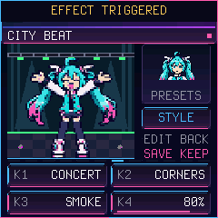
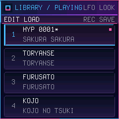
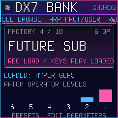
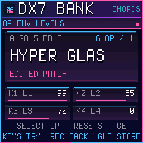

SINGING SONGWRITER · M-VAVE FM-1 · VERSION {{VERSION}}
Miku-FM.
A tiny singer lives in your FM-1.
She sings your songs in Japanese, with FM chords, bass and drums. Write them step by step, or let her dream one up.
NEW / WHAT'S NEW IN {{VERSION}}
She dances smoothly now.
Everything below is in the firmware you can play on this page and install at the bottom. The guide shows every control.
Every frame on time.
The dancer used to stutter while a song played: a frame could take longer to draw than its beat. Now she draws while the screen updates, and every frame lands on time.
No more size jumps.
All 12 outfits keep the same height from pose to pose. The bow at the end still bows.
Name your voices.
Rename the 32 DX7 voices in your user bank right on the FM-1.
Sustain on everything.
The sustain pedal now holds the singer and the classic chords and bass too, not only the DX7 voices. Plus tidier BANK and LIBRARY screens.
0.7 / A BIGGER BOX OF SOUND
Six-operator FM.
A real DX7 engine with ten original voices, and every operator editable on the FM-1: ratios, envelopes, scaling, LFO. Your edits are saved inside the song.
Your own 32 voices.
Send a DX7 cartridge or a single voice from Dexed, or from the bank tool right here, and keep a user bank of 32. Save it back as a .syx whenever you like.
Play her from a keyboard.
Notes from a MIDI keyboard play the current track. The sustain pedal holds every sound; on DX7 chords and bass pitch bend works too, and the bass can glide.
Ten slots, four folk songs.
Sakura Sakura, Tōryanse, Furusato and Kōjō no Tsuki are ready in slots 1 to 4, written as ordinary songs you can edit. The LIBRARY page loads, saves and restores them.
Edit what she sings.
A LYRICS page for the syllables of a vocal pattern: change them, hold a vowel, mark words and phrases, copy a lyric onto another melody.
Dress the stage.
Per song: 12 outfits, backgrounds, frames and stage effects (fireworks, sparkles, confetti, smoke, beams). The look is saved with the song's slot.
Five new styles.
HYPERPOP, FUTURE BASS, JERSEY CLUB, DIGICORE and IDOL POP join POP, BALLAD, DANCE and CHIP, each with its own DX7 chords and bass. Hear them below.
Coming later: video out over USB. It is not in {{VERSION}}.
01 / ON STAGE
Her screens.
Native firmware renders: the real package running in the emulator, unchanged.






02 / PLAY IT HERE
Your FM-1, in the browser.
This is the firmware package itself, emulated by fm1-emu. Click it, then:
- PLAY: she sings the demo 「おとのはこ」. HOME steps through STAGE, DANCE, SONG, PATTERN, MIXER, GEN, LYRICS, LOOK, the song LIBRARY and the DX7 BANK. On STAGE or DANCE, ARP jumps to the LIBRARY: SELECT a slot, PLAY plays it (slots 1 to 4 are the folk songs).
- On SONG, PATTERN, MIXER and GEN, FX · SCL · ENV · LFO pick the track (vocal, chords, bass, drums); the keys play it. On PATTERN a key writes the step.
- On STAGE the knobs shape her voice: FX, ENV, LFO switch the four knobs (effects, envelope, vibrato), and holding one of them, or SEL, opens a deeper layer (source, effect details, articulation, harmony). SELECT turns the syllable dial.
- On GEN: knob 1 the style (nine of them), 2 the key, 3 major or minor, 4 the seed; REC writes a new song, PLAY plays it.
- On LYRICS, SELECT picks a syllable and ALGORITHM changes it; on LOOK, SELECT picks an outfit and the knobs set the background, frame and effect.
- On MIXER, REC opens the DX7 BANK: SELECT browses, REC loads, EDIT opens the operator pages and the knobs edit them. To bring in your own voices, use the DX7 bank tool on a real FM-1.
03 / THE TRAILER
Meet her.
Every screen and every sound in it is the firmware running in the emulator; nothing is mocked up.
04 / LISTEN
Songs she sings.
Rendered on a computer by the same C engine that runs in the FM-1's audio interrupt. The classic styles first.
New in {{VERSION}}: five more styles, and the DX7 bank.
Rendered the same way, A minor, energy 75, complexity 70, each with its own DX7 chords and bass.
05 / WHAT SHE CAN DO
A whole little studio.
She really sings.
A formant voice, synthesised live: 70 Japanese morae with their consonants, five characters, whisper, fry, a harmony voice, chorus, delay, reverb, drive. No samples.
Four tracks, one song.
Vocal, chords, bass and drums. Classic FM sounds or six-operator DX7 voices on chords and bass. 16 patterns per track, 64 rows with sections, swing, undo, 10 song slots with four Japanese folk songs ready to play.
Dream one up.
HYPERPOP, FUTURE BASS, JERSEY CLUB, DIGICORE, IDOL POP, or the classic POP, BALLAD, DANCE and CHIP, in any key. Each new style brings its own DX7 chords and bass. Lock what you like, regenerate the rest. Keep it or drop it.
She is on stage.
A pixel face that mouths every vowel and a full-body dancer that moves to your song, in 12 outfits, with backgrounds, frames and stage effects chosen per song.
A real six-operator FM bank.
All 32 DX7 algorithms, feedback, envelopes, LFO, pitch bend, sustain and bass glide. Ten original voices, every operator editable on the device, and your edits saved inside the song.
Bring your cartridges.
Send a DX7 bank or single voice from Dexed or the bank tool over USB and keep 32 voices of your own; save them back as a .syx. Play any track from a MIDI keyboard; DX7 voices answer the sustain pedal and pitch bend.
VERSION {{VERSION}} / INSTALL WITH CARE
Bring her home.
{{BUILD}}
SHA-256 {{SHA256}}
Miku-FM is an early development build. It runs on a real FM-1 (installed with this page's installer; songs save and load), but few people have tried it yet. Install it only if you are ready to use the USB rescue: hold OCT− while switching on. The installer needs Chrome or Edge (Web MIDI) and a USB data cable. It can also take you back to the official V15.
Miku-FM does not read other firmwares' projects or samples, and saving replaces the settings other Felucca-family firmwares keep. Back up first. Install and recovery guide ↗ · What has been measured ↗
WITH GRATITUDE / OUR ROOTS
Built on generous work.
Miku-FM runs on Dinghy by zvenson, the FM-1 firmware platform (GPL-3.0-only), whose base comes from Felucca by Leo Kuroshita (Hügelton Instruments) with the changes of SLOOP (isod89). This site's installer is Felucca's web installer; releases are built and attested by the Firmware Hub's shared builder. The emulator is fm1-emu by Joakim Eriksson (MIT). The DX7 voices are rendered by an adaptation of Google's Music Synthesizer for Android (Apache-2.0).